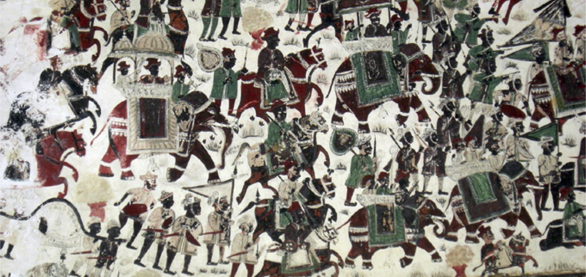
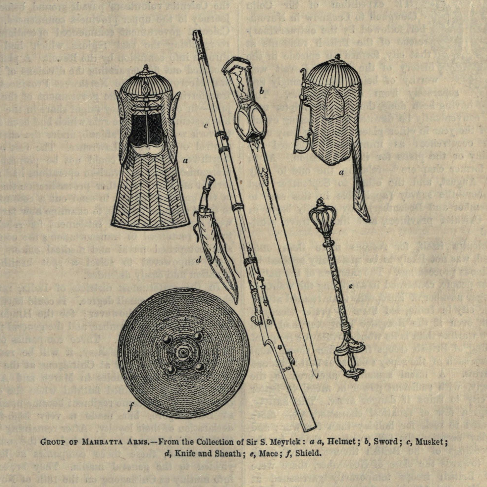

पोवाड्यांच्या गर्जनेपासून लावणीच्या ठेक्यापर्यंत, ग्रामीण मातीतल्या परंपरांपासून सण-उत्सवांच्या उत्साहापर्यंत — मराठी मातीतील समृद्ध सांस्कृतिक वारसा.
मराठी ही भारतातील सर्वात प्राचीन व समृद्ध भाषांपैकी एक असून, ती महाराष्ट्राच्या सांस्कृतिक अस्मितेचा गाभा आहे. संत साहित्य (ज्ञानेश्वरी, तुकारामांचे अभंग), शिवकालीन मोडी पत्रव्यवहार आणि आधुनिक मराठी साहित्य यांतून या भाषेची वैचारिक व साहित्यिक समृद्धी दिसून येते.
पोवाडा ही शूरवीरांच्या पराक्रमाचे वर्णन करणारी पारंपरिक बलाढ्य स्वरातील गीत-काव्य परंपरा आहे. डफ व तुणतुण्याच्या तालावर सादर होणारे पोवाडे शिवाजी महाराज व मराठा योद्ध्यांच्या शौर्यगाथा पिढ्यानपिढ्या जिवंत ठेवण्याचे प्रभावी माध्यम ठरले आहेत.
लावणी हा महाराष्ट्रातील एक प्रसिद्ध पारंपरिक नृत्य-संगीत प्रकार असून, ढोलकीच्या ठेक्यावर सादर होणारी ही कला महाराष्ट्राच्या लोककला परंपरेतील एक ठळक ओळख आहे. तमाशा या पारंपरिक रंगमंच कलाप्रकाराशीही लावणीचा घनिष्ठ संबंध आहे.
तमाशा, भारूड, गोंधळ, जागरण यांसारख्या ग्रामीण लोककला प्रकारांनी शतकानुशतके मनोरंजनासोबतच सामाजिक प्रबोधनाचेही काम केले आहे. या कला आजही महाराष्ट्राच्या ग्रामीण भागांत सण-उत्सवांच्या निमित्ताने सादर होतात.
पुरुषांचे पारंपरिक धोतर-फेटा व पगडी, तर स्त्रियांची नऊवारी साडी ही मराठी वेशभूषेची ठळक ओळख आहे. सण-उत्सव व पारंपरिक कार्यक्रमांत आजही ही वेशभूषा अभिमानाने परिधान केली जाते.
पुरणपोळी, वडा-पाव, मिसळ, झुणका-भाकर, कोकणातील मालवणी मासळी असे विविधरंगी पदार्थ महाराष्ट्राच्या प्रादेशिक खाद्यसंस्कृतीची श्रीमंती दाखवतात. प्रत्येक विभागाची स्वतःची वैशिष्ट्यपूर्ण चव व पाककृती परंपरा आहे.
वाडी-वस्तीवरील सामुदायिक जीवन, जत्रा-यात्रा, बैलगाडी शर्यती आणि गावकीच्या परंपरा हे महाराष्ट्राच्या ग्रामीण सांस्कृतिक जीवनाचे अविभाज्य भाग आहेत. शेती आणि सण-उत्सव यांची घट्ट वीण हेच ग्रामीण मराठी संस्कृतीचे वैशिष्ट्य आहे.
मर्दानी खेळ, दांडपट्टा प्रात्यक्षिके आणि गडकोट भ्रमंतीसारख्या उपक्रमांमधून मराठा शौर्यपरंपरा आजही जपली जाते. ही परंपरा नव्या पिढीला इतिहासाशी जोडणारा जिवंत दुवा आहे.

